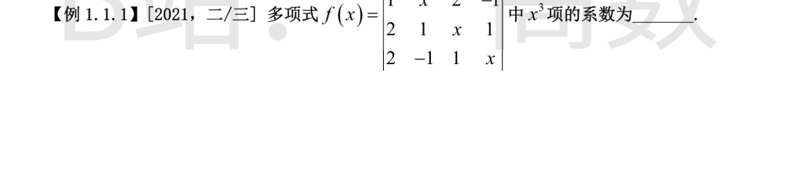
按行列式定义，含 x 的元素位于 (1,1),(1,2),(1,4),(2,2),(3,3),(4,4)。x^3 项只能来自恰含三个 x 因子的异行异列乘积，逐一列举所有可能：
- (1,4),(2,2),(3,3),(4,1)：排列 (4,2,3,1)，乘积 (2x)·x·x·2 = 4x^3，逆序数 τ=5 为奇，贡献 −4x^3；
- (1,2),(2,1),(3,3),(4,4)：排列 (2,1,3,4)，乘积 x·1·x·x = x^3，逆序数 τ=1 为奇，贡献 −x^3；
- 其余组合（如行 1 取 (1,1) 或 (1,2)，行 2、3、4 取 (2,2),(3,3),(4,4)）必含四个 x 因子，给出 x^4 项；不取满三个 x 的组合次数低于 3。
故 x^3 项系数 = −4 + (−1) = −5。
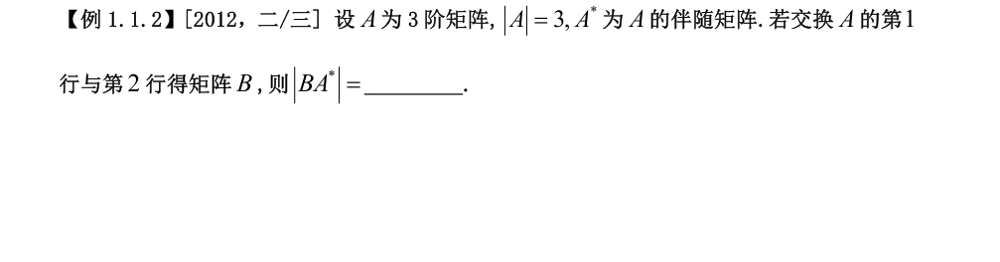
对换两行改变行列式符号：|B| = −|A| = −3。
3 阶方阵的伴随矩阵满足 |A*| = |A|^{n−1} = |A|^2 = 3^2 = 9。
于是 |BA*| = |B|·|A*| = (−3)·9 = −27。
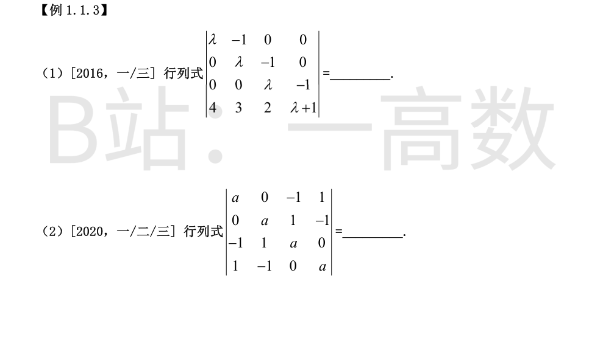
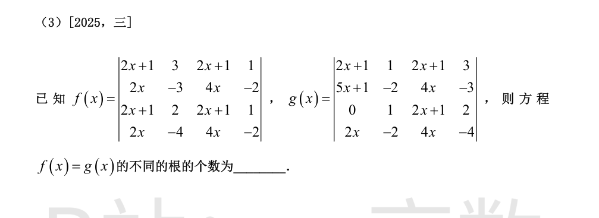
按第 1 列展开（非零元为 (1,1) 的 λ 与 (4,1) 的 4）：
$$D=\lambda\cdot(-1)^{1+1}M_{11}+4\cdot(-1)^{4+1}M_{41}=\lambda M_{11}-4M_{41}.$$
$$M_{11}=\begin{vmatrix}\lambda & -1 & 0\\ 0 & \lambda & -1\\ 3 & 2 & \lambda+1\end{vmatrix}
=\lambda\big(\lambda(\lambda+1)+2\big)+3=\lambda^3+\lambda^2+2\lambda+3.$$
$$M_{41}=\begin{vmatrix}-1 & 0 & 0\\ \lambda & -1 & 0\\ 0 & \lambda & -1\end{vmatrix}=-1.$$
故 D = λ(λ^3+λ^2+2λ+3) − 4·(−1) = λ^4+λ^3+2λ^2+3λ+4。
检验：λ=0 时 D=4，λ=1 时 D=11，λ=2 时 D=42，均与直接计算一致。
作行变换 r3 → r3 + r4（值不变）：第 3 行变为 (0, 0, a, a)。此时第 1 列只有 (1,1) 的 a 与 (4,1) 的 1 非零，按第 1 列展开：
$$D=a\cdot M_{11}+1\cdot(-1)^{4+1}M_{41}.$$
其中
$$M_{11}=\begin{vmatrix} a & 1 & -1\\ 0 & a & a\\ -1 & 0 & a\end{vmatrix}
=a\cdot a^2-1\cdot(a)+(-1)\cdot(a)=a^3-2a,$$
$$M_{41}=\begin{vmatrix} 0 & -1 & 1\\ a & 1 & -1\\ 0 & a & a\end{vmatrix}
=a\cdot(-1)^{2+1}\begin{vmatrix}-1 & 1\\ a & a\end{vmatrix}=-a(-a-a)=2a^2.$$
故 D = a(a^3−2a) − 2a^2 = a^4 − 4a^2。
检验：a=0,1,2 时 D 分别为 0, −3, 0，与直接计算一致（如 a=2 时第 3、4 行化简后 3 阶子式为 0）。
**先看 f(x)：** r1 − r3 = (0,1,0,0)，r2 − r4 = (0,1,0,0)，故 r1 − r3 = r2 − r4，即 r1 + r4 = r2 + r3，四行线性相关，所以 f(x) ≡ 0。
**再算 g(x)：** 依次作 r1 ← r1 − r3 = (2x+1, 0, 0, 1)，r2 ← r2 − r4 = (3x+1, 0, 0, 1)，r2 ← r2 − r1 = (x, 0, 0, 0)。按第 2 行展开：
$$g(x)=x\cdot(-1)^{2+1}\begin{vmatrix} 0 & 0 & 1\\ 1 & 2x+1 & 2\\ -2 & 4x & -4\end{vmatrix}
=-x\big(4x-(2x+1)(-2)\big)=-x(8x+2)=-2x(4x+1).$$
（检验：x=1 时按原行列式直接算得 g(1) = −10，与公式一致。）
f(x) = g(x) 即 −2x(4x+1) = 0，根为 x = 0 与 x = −1/4，故不同的根共有 2 个。
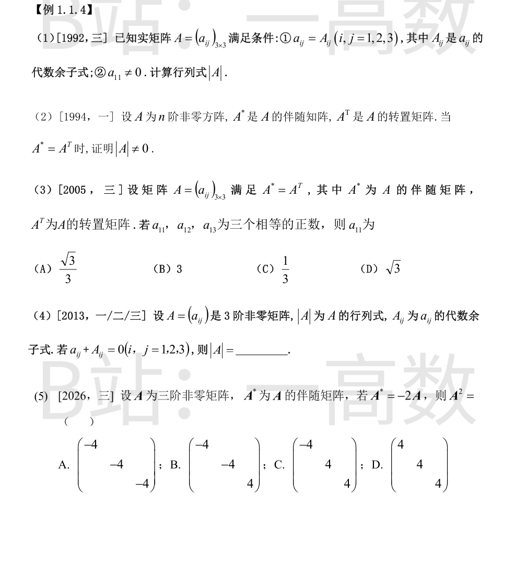
由 a_{ij} = A_{ij} 知 A* = A^T。代入 AA* = |A|E 得 AA^T = |A|E。
两边取行列式：|A|^2 = |A|^3，即 |A|^2(1−|A|) = 0，故 |A| = 0 或 1。
另一方面，按第 1 行展开
$$|A|=a_{11}A_{11}+a_{12}A_{12}+a_{13}A_{13}=a_{11}^2+a_{12}^2+a_{13}^2>0$$
（A 实且 a_{11}≠0）。故 |A| ≠ 0，得 |A| = 1。
反证法。假设 |A| = 0。
由伴随矩阵基本式 AA* = |A|E 及条件 A* = A^T，得
$$AA^T=|A|E=O.$$
记 A 的第 i 行为 α_i = (a_{i1},…,a_{in})，则 AA^T 的 (i,i) 元为 α_i·α_i = Σ_{j} a_{ij}^2 = 0（对每个 i 成立）。A 为实矩阵，平方和为零意味着该行每个元素为零，故 A 的每一行都是零向量，即 A = O，与 A 非零矛盾。
因此 |A| ≠ 0。（由 AA^T = |A|E 两边取行列式还可进一步得 |A|^2 = |A|^3，结合 |A| ≠ 0 知 |A| = 1。）
A* = A^T 代入 AA* = |A|E 得 AA^T = |A|E，两边取行列式：|A|^2 = |A|^3。
又按第 1 行展开 |A| = a_{11}A_{11}+a_{12}A_{12}+a_{13}A_{13} = a_{11}^2+a_{12}^2+a_{13}^2 > 0（有正元素），故 |A| = 1。
设 a_{11} = a_{12} = a_{13} = t > 0，则第 1 行元素平方和等于 |A|：
$$3t^2 = 1 \Rightarrow t = \frac{1}{\sqrt3} = \frac{\sqrt3}{3}.$$
选 (A)。
由 a_{ij} = −A_{ij} 得 A_{ji} = −a_{ji}，即伴随矩阵 A* = −A^T。
代入 AA* = |A|E：
$$-AA^T=|A|E.$$
两边取行列式：(−1)^3|A|^2 = |A|^3，即 −|A|^2 = |A|^3，|A|^2(|A|+1) = 0，故 |A| = 0 或 −1。
若 |A| = 0，则 −AA^T = O，即 AA^T = O，其实矩阵每行平方和为零，得 A = O，与 A 非零矛盾。
故 |A| = −1。
先求 |A|：由 A* = −2A 两边取行列式
$$|A^*|=|-2A|=(-2)^3|A|=-8|A|,$$
又 3 阶时 |A*| = |A|^2，故 |A|^2 = −8|A|，即 |A|(|A|+8) = 0，|A| = 0 或 −8。
排除 |A| = 0：若 |A| = 0，则 r(A*) = r(−2A) = r(A)。3 阶伴随矩阵的秩：r(A)=3 时 r(A*)=3；r(A)=2 时 r(A*)=1；r(A)≤1 时 r(A*)=0。r(A)=2 时得 1=2 矛盾；r(A)≤1 时 A* = −2A = O 得 A = O，与 A 非零矛盾。故 |A| = −8。
再由 AA* = |A|E：A(−2A) = |A|E，即
$$-2A^2=|A|E=-8E \Rightarrow A^2=4E=\begin{pmatrix}4&&\\&4&\\&&4\end{pmatrix}.$$
选 D。
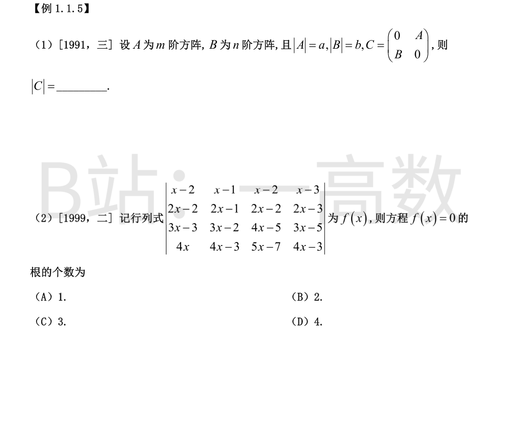
C 为 m+n 阶。把后 n 列整体移到最前面（每列向左越过 m 列，共 n·m 次相邻列对换），行列式变号 (−1)^{mn} 次，得到分块对角矩阵 diag(B, A)。
故
$$|C|=(-1)^{mn}\begin{vmatrix}B\end{vmatrix}\begin{vmatrix}A\end{vmatrix}=(-1)^{mn}ab.$$
作行变换消去 x：r2−2r1 = (2,1,2,3)，r3−3r1 = (3,1,x+1,4)，r4−4r1 = (8,1,x+1,9)。
继续：r3−r2 = (1,0,x−1,1)，r4−r2 = (6,0,x−1,6)，r4−r3 = (5,0,0,5)。
再作 c4 ← c4 − c1 = (−1,1,0,0)。此时按第 4 行展开：
$$f(x)=5\cdot(-1)^{4+1}\begin{vmatrix} x-1 & x-2 & -1\\ 1 & 2 & 1\\ 0 & x-1 & 0\end{vmatrix}
=-5\cdot\Big(-(x-1)\begin{vmatrix}x-1 & -1\\ 1 & 1\end{vmatrix}\Big)=-5\big(-x(x-1)\big)=5x(x-1).$$
（检验：x=0 时原行列式第 1、2 行相同，f(0)=0；x=1、x=2 直接计算得 0、10，均与 5x(x−1) 一致。）
f(x) = 5x(x−1) 是二次式且 0、1 都是单根，故 f(x)=0 恰有 2 个不同的根。选 (B)。
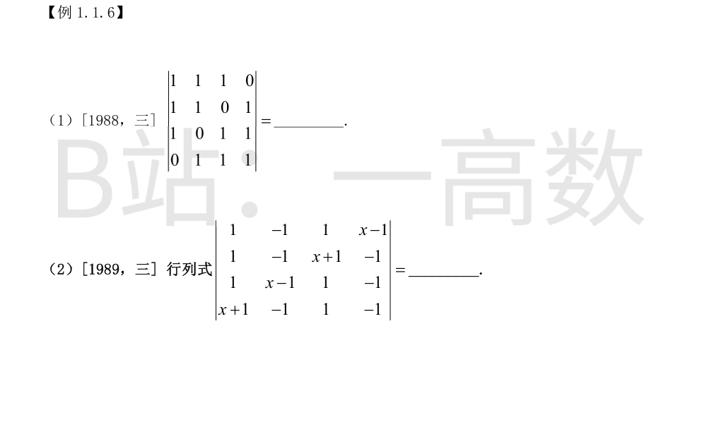
每行元素之和均为 3。将第 2、3、4 列都加到第 1 列，第 1 列变为 (3,3,3,3)^T，提出公因子 3：
$$D=3\begin{vmatrix} 1 & 1 & 1 & 0\\ 1 & 1 & 0 & 1\\ 1 & 0 & 1 & 1\\ 1 & 1 & 1 & 1\end{vmatrix}.$$
再作 r2−r1 = (0,0,−1,1)，r3−r1 = (0,−1,0,1)，r4−r1 = (0,0,0,1)，按第 1 列展开得 3 阶行列式
$$\begin{vmatrix} 0 & -1 & 1\\ -1 & 0 & 1\\ 0 & 0 & 1\end{vmatrix} = 1\cdot(0-1) = -1.$$
故 D = 3·(−1) = −3。
（另法：该矩阵 = J − E，J 为全 1 矩阵，特征值为 3, −1, −1, −1，行列式 = 3·(−1)^3 = −3。）
四列之和恰为 (x,x,x,x)^T。作 c1 ← c1 + c2 + c3 + c4，提出公因子 x：
$$D=x\begin{vmatrix} 1 & -1 & 1 & x-1\\ 1 & -1 & x+1 & -1\\ 1 & x-1 & 1 & -1\\ 1 & -1 & 1 & -1\end{vmatrix}.$$
再作 r2−r1 = (0,0,x,−x)，r3−r1 = (0,x,0,−x)，r4−r1 = (0,0,0,−x)，按第 1 列展开：
$$D=x\cdot\begin{vmatrix} 0 & x & -x\\ x & 0 & -x\\ 0 & 0 & -x\end{vmatrix}
=x\cdot\Big[x\cdot(-1)^{2+1}\begin{vmatrix} x & -x\\ 0 & -x\end{vmatrix}\Big]
=x\cdot\big(-x\cdot(-x^2)\big)=x\cdot x^3=x^4.$$
（检验：x=1 时直接计算行列式值为 1 = 1^4，一致。）
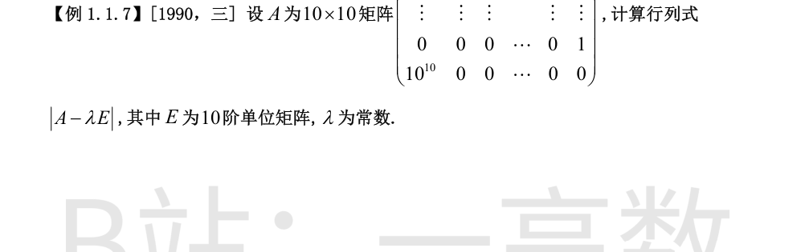
A − λE 的结构：主对角线全为 −λ；上双对角线（(k,k+1) 位置）全为 1；(10,1) 位置为 10^10。
按第 1 列展开，非零元只有 (1,1) 的 −λ 与 (10,1) 的 10^10：
$$|A-\lambda E|=(-\lambda)\cdot(-\lambda)^9+10^{10}\cdot(-1)^{10+1}\cdot M_{10,1}.$$
- 第一个余子式是「主对角线 −λ、上双对角线 1」的 9 阶上三角行列式，值为 (−λ)^9；
- M_{10,1}（划去第 10 行第 1 列）是主对角线全为 1 的 9 阶上三角行列式，值为 1。
故
$$|A-\lambda E|=(-\lambda)(-\lambda)^9-10^{10}=\lambda^{10}-10^{10}.$$
（检验：λ=0 时 |A| = 10^{10}·(−1)^9·1 = −10^{10}，与公式在 λ=0 处的值一致。）
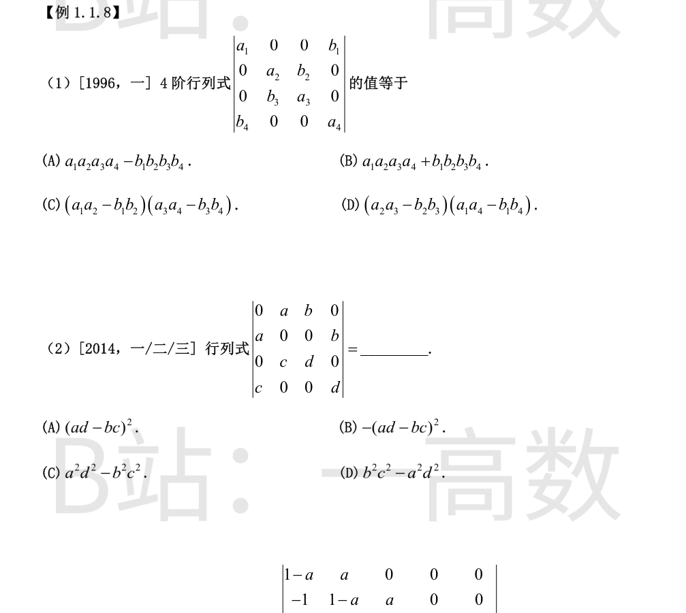
按第 1 行展开：
$$D=a_1 M_{11}+b_1\cdot(-1)^{1+4}M_{14}=a_1M_{11}-b_1M_{14}.$$
$$M_{11}=\begin{vmatrix} a_2 & b_2 & 0\\ b_3 & a_3 & 0\\ 0 & 0 & a_4\end{vmatrix}=a_4(a_2a_3-b_2b_3),\qquad
M_{14}=\begin{vmatrix} 0 & a_2 & b_2\\ 0 & b_3 & a_3\\ b_4 & 0 & 0\end{vmatrix}=b_4(a_2a_3-b_2b_3).$$
（M14 按第 1 列展开，只有 b4 非零，符号 (−1)^{3+1}。）
故
$$D=(a_2a_3-b_2b_3)(a_1a_4-b_1b_4).$$
选 (D)。
按第 1 列展开，非零元为 (2,1) 的 a 与 (4,1) 的 c：
$$D=a(-1)^{2+1}M_{21}+c(-1)^{4+1}M_{41}=-aM_{21}-cM_{41}.$$
$$M_{21}=\begin{vmatrix} a & b & 0\\ c & d & 0\\ 0 & 0 & d\end{vmatrix}=d(ad-bc),\qquad
M_{41}=\begin{vmatrix} a & b & 0\\ 0 & 0 & b\\ c & d & 0\end{vmatrix}=-b(ad-bc).$$
（M41 按第 3 列展开，b 在 (2,3)，符号 (−1)^{2+3}。）
故
$$D=-ad(ad-bc)+bc(ad-bc)=(ad-bc)(bc-ad)=-(ad-bc)^2.$$
选 (B)。（检验：a=b=c=d=1 时第 1、3 行相同，行列式为 0 = −(1−1)^2；a=1,b=2,c=3,d=4 时直接算得 −4 = −(4−6)^2。）
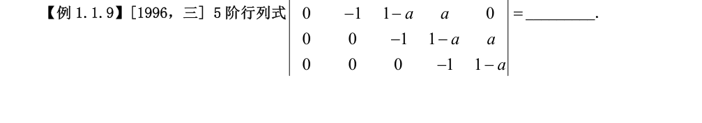
记同型的 n 阶行列式为 D_n。按第 1 列展开（非零元 (1,1) 的 1−a 与 (2,1) 的 −1）：
$$D_n=(1-a)D_{n-1}+(-1)\cdot(-1)^{2+1}M_{21}=(1-a)D_{n-1}+M_{21},$$
其中 M_{21}（划去第 2 行第 1 列）的第 1 行只有首元 a 非零，展开后恰为 a·D_{n−2}。故递推式
$$D_n=(1-a)D_{n-1}+aD_{n-2}.$$
初值：D_1 = 1−a；D_2 = (1−a)^2+a = 1−a+a^2。逐阶递推：
$$D_3=(1-a)D_2+aD_1=1-a+a^2-a^3,$$
$$D_4=(1-a)D_3+aD_2=1-a+a^2-a^3+a^4,$$
$$D_5=(1-a)D_4+aD_3=1-a+a^2-a^3+a^4-a^5.$$
（检验：a=1 时行列式为对角全 0 的三对角阵，值为 0，与 1−1+1−1+1−1 = 0 一致；a=2 时递推得 −21，与直接消元计算一致。）
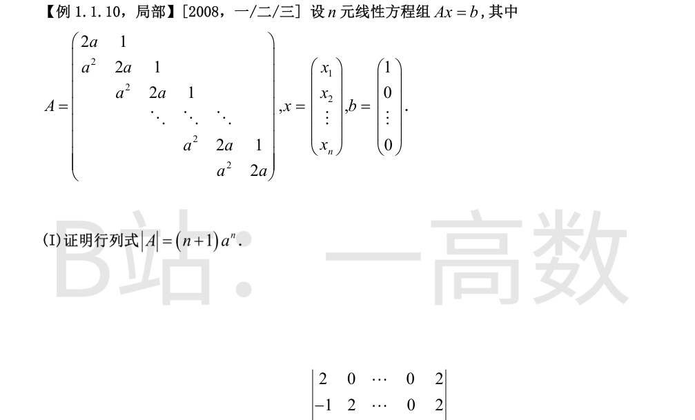
记该 n 阶行列式为 D_n。
**建立递推。** 按第 1 行展开（第 1 行为 (2a, 1, 0, …, 0)）：
$$D_n=2aD_{n-1}-1\cdot M_{12}.$$
M_{12} 是划去第 1 行第 2 列的 n−1 阶行列式，其第 1 列只有首元 a^2 非零，故 M_{12} = a^2·D_{n−2}，于是
$$D_n=2aD_{n-1}-a^2D_{n-2}.$$
**归纳证明。** 初值：D_1 = 2a = 2a^1；D_2 = (2a)^2 − a^2 = 3a^2。设 D_{n−1} = n·a^{n−1}，D_{n−2} = (n−1)a^{n−2}，则
$$D_n=2a\cdot na^{n-1}-a^2\cdot(n-1)a^{n-2}=\big(2n-(n-1)\big)a^n=(n+1)a^n.$$
由 n = 1, 2 成立及上述归纳步骤，对一切 n 有 |A| = (n+1)a^n。（a = 0 时 A 为主对角全 0、上方全 1 的下三角零对角阵，|A| = 0 = (n+1)·0，仍成立。）
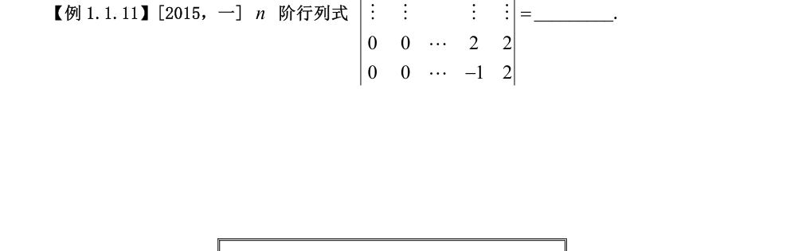
记该行列式为 D_n，按第 1 行展开（第 1 行为 (2, 0, …, 0, 2)）：
$$D_n=2D_{n-1}+2\cdot(-1)^{1+n}M_{1n},$$
其中 D_{n−1} 为右下角同型 n−1 阶行列式；M_{1n}（划去第 1 行第 n 列）是「主对角线全 −1、其上一条对角线全 2」的上三角行列式，值为 (−1)^{n−1}。由 (−1)^{1+n}(−1)^{n−1} = (−1)^{2n} = 1，得
$$D_n=2D_{n-1}+2.$$
初值 D_1 = 2。两边加 2：D_n + 2 = 2(D_{n−1} + 2)，递推得
$$D_n+2=2^{n-1}(D_1+2)=2^{n-1}\cdot 4=2^{n+1},\qquad D_n=2^{n+1}-2.$$
（检验：n=2 时 |2 2; −1 2| = 6 = 2^3−2；n=3 时消元算得 14 = 2^4−2；n=4 时得 30 = 2^5−2。）
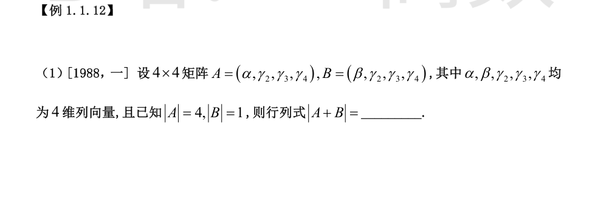
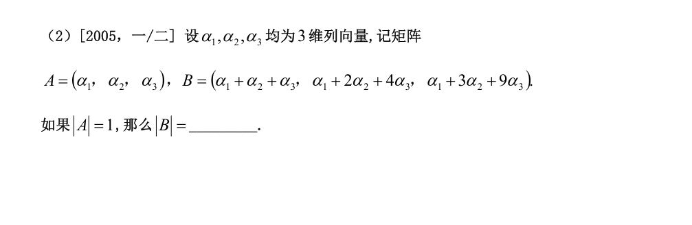
A + B = (α+β, 2γ₂, 2γ₃, 2γ₄)。由行列式对列的多线性：
$$|A+B|=2^3\,|\,\alpha+\beta,\ \gamma_2,\ \gamma_3,\ \gamma_4\,|=8\big(|A|+|B|\big)=8\times(4+1)=40.$$
（第 2、3、4 列各提出公因子 2，共 2^3；第 1 列拆成 α 与 β 两项。）
B 的每一列都是 α₁,α₂,α₃ 的线性组合，即 B = A·C，其中
$$C=\begin{pmatrix} 1 & 1 & 1\\ 1 & 2 & 3\\ 1 & 4 & 9\end{pmatrix}$$
（C 的三列分别为 (1,1,1)^T, (1,2,4)^T, (1,3,9)^T）。C 是范德蒙德型行列式：
$$|C|=(2-1)(3-1)(3-2)=2.$$
故 |B| = |A|·|C| = 1×2 = 2。